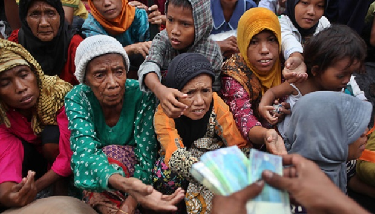
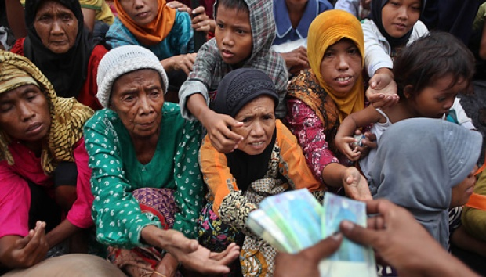

Kondisi Terkini Kemiskinan di Indonesia
Menurut Badan Pusat Statistik, Informasi terbaru terkait tingkat kemiskinan di Indonesia adalah pada Maret 2025 sebanyak 8,47% atau sekitar 23,85 juta jiwa, yang mencapai angka terendah sepanjang masa. Angka ini menurun dibandingkan September 2024 yaitu sebesar 0,10%. Namun, tingkat kemiskinan di daerah perkotaan sedikit meningkat yaitu sebesar 6,73%, sementara di daerah pedesaan menurun sebanyak 11,03%. Provinsi yang memiliki tingkat kemiskinan tertinggi adalah Papua Pegunungan sebanyak 30,03%, Papua Tengah sebanyak 28,9%, serta Papua Barat sebanyak 20,66%. Sedangkan provinsi dengan tingkat kemiskinan terendah adalah Bali yang mencakup 3,72%.
1. Pekerjaan: Sulit menemukan pekerjaan karena persaingan tingkatan ijazah dan batasan usia
2. Penghasilan: Pendapatan rendah dan biaya hidup meningkat
3. Pengangguran: Hilangnya pekerjaan karena Pemutusan Hubungan Kerja yang meningkat.
4. Usia: Lansia tidak dapat bekerja menyebabkan tidak memiliki penghasilan untuk memenuhi kebutuhan hidup.


 
